Hello! This is my thoughts on the characters from the video game Danganronpa 2: Goodbye Despair.
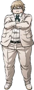
Byakuya Togami?:
He sure was there for all of 5 minutes. I was fully willing to accept they'd just bring back a random guy from the last game and kill him immediately, but the truth is even stupider?
Like, the fact they went through the trouble to introduce the ultimate imposter, a student so good at impersonating that literally no one knows anything about them, and then it never comes up? So weird. Maybe they'd already written this Byakuya into the story but decided later that they wanted real Byakuya to come in?
Teruteru Whatever:
I hate this stupid guy, and I was glad when he got dipped in oil. They made a character that was 90% nasty pervert by dialogue volume, so they had to cram all his sympathetic traits at the very last moments before his execution.
Mahiru Koizumi:
I didn't spend much time with her, so I didn't get a sense of what she was like. I mainly remember she kept being weird about saying people had to be strong because they were boys or something? She was nice to Hiyoko at least.
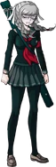
Peko Pekoyama:
I actually did Peko's social link things first. My thinking was that she was the more calm, reasonable type that would survive long and not be annoying. Then she kind of came out of nowhere as the killer for trial #2? Going in, I (I assume like everyone else) was convinced that the killer would either be Fuyuhiko or the small kimono lady, so it wasn't like I was expecting anything else, but it still felt like it wasn't really built up all that much.
Through her social links, you get a nice story about her forging a tough exterior and 'forgetting how to smile', which leads to a nice fake-out love confession where she asks for advice on asking out a childhood friend (which I guess is technically foreshadowing, and you don't really get the impression that much on the main route that she reciprocates Fuyuhiko's feelings). It's kind of sweet. After that interaction, you get her underwear as an item in your inventory, so that pretty much sums up the tone of this game.
(Also, a quick note on the 'Twilight Syndrome Murder Case' bit because I don't know where else to put it, the choice to use a real photo of an actor as the 'murdured school girl' kind of disturbed me. I don't know why they chose to do that.)
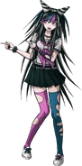
Ibuki Mioda:
Ibuki sat just before the border that goes between 'weird in an endearing way' and 'weird in an annoying way'. But she's usually very fun. I like how some of her voicelines are just saying the things she's doing out loud. I also like how the song she played for everyone was completely terrible. I was sad she didn't make it to the end.
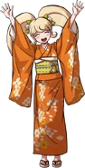
Hiyoko Saionji:
It was at this point in the game where I found my self surprised at the degree to which I was caring about these characters. They make a point to show that, while Hiyoko usually acts self-centered and hurls insults at whoever, Mahiru's death really affects her, so she makes an effort to try and change for the better.
Looking back, it's funny how she made that stink mural in the restaurant that sat there the whole rest of the game.
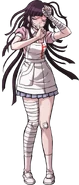
Mikan Tsumuki:
I thought Mikan was fine. Kind of endearing I suppuse, but all of the 'oops i'm so clumsy haha here's my underwear' parts near the start just kind of annoyed me. Her killer twist still comes out of nowhere, though. (guys.. she had the Remembering Disease...)
(For a while during this case, I thought that since Ibuki was doing everything people told her to do, Mikan just askeed her to commit suicide and she did it, but that may have been too dark.)
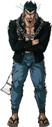
Nekomaru Nidai:
I can't say I thought much of this guy. I found his yelling kind of annoying, but his 'bromance' with Akane is cool I guess. I really like how he got turned into a robot, even if he got killed right after.
(Also maybe this is just something that happens in these games, but... there's never a 'payoff' for minimaru? I like that it's there, it's cute, but you'd think that if they went through the trouble to introduce it then it would become relevant in some way...)
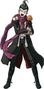
Gundham Tanaka:
Thought he was pretty chill. The kind of character that could so easily veer into 'I hate this guy' territory, but since he's usually nice and kind of keeps to himself, I grew to enjoy his weird eccentricities. I can't tell you how much I recoiled when he was called the 'Ultimate Breeder' though. Thank god it just turned out to be hamsters.
Like Mikan, His killer twist sort of comes out of thin air. I suppose it must be a difficult writing challenge to make a bunch of compelling characters you want the audience to like, then force reasons to make them kill each other.
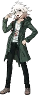
Nagito Komaeda:
This is the guy from memes! Sans' friend, or something. I'd say I'm mostly positive on him. His whole bit where he'd start to babble about hope and despair was usually kind of lost on me though.
That said, I think his case was maybe the best one? The mechanics of discerning immediately that his death was a suicide, everyone cooperating to figure out how it was pulled off, then the pivot back to "someone did kill him, we just don't know who" was really compelling.
Chiaki Nanami:
She took on the role of "most level-headed person in the trial" after Peko died, so I have a lot of respect for her for that. I also have a lot of respect for her being sleepy all the time.
In hindsight, her being the Ultimate Gamer is a neat little bit of 'foreshadowing'
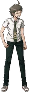
Hajime Hinada:
So, the survivors! I have arranged them in order from 'like the least' to 'like the most'. Starting with Hajime.
BORN TO PROTAGONIST
WORLD IS A SIMULATION
COUNTERPOINT EM ALL 20XX
I AM BLANK SLATE MAN
2357 DEAD RESERVE COURSE STUDENTS
Seriously, I have like nothing to say. Is it interesting that he's secretly the mega ultra talented school headmaster? Kind of? Do I like it as a plot beat? Not really. It ends up drowining in the giant soup of information you get in that final argument.
Then he goes super saiyan with belief power and fixes the situation by deciding to fix the situation. It didn't really feel clever or interesting to me.
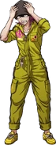
Kazuichi Soda:
Kazuichi is ok I guess. His energy usually ranges from "dumb best friend" to "please just let go man she's not into you"
Sonia Nevermind:
Sonia can be nice sometimes. She has personality traits and interests that aren't stalking, which I like. Also it's funny when she swears that one time.
Akane Owari:
Akane is super chill. She doesn't know what's going on most of the time but she still hangs out. Main personality traits are beating things up and eating food. And she keeps minimaru around, which is cute. Good character.
(unfortunately, she did seem to catch the 'hello protagonist, please grope my body with your hands' disease from Mikan though.)
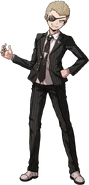
Fuyuhiko Kuzuryu:
I'm surprised, but Fuyuhiko ended up in my #1 spot. After his big ego bruising, he becomes a nice, reliable member of the team. I don't smoke, but I would smoke a blunt with this dude.
I'm also not really used to swearing in games, especailly visual novels, so I got a bit of pleasure every time it cut to Fuyuhiko going "What the FUCK?"
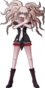
The End of the Game
In the lead-up to the end of the game, I was riding quite high. The mechanics of Nagito's trial were really fun to think through, and the twists were great. I was about to take a break from the game after that, but seeing the start of the glitchy corruption effects sat me straight back down in my seat to keep going. I really liked all the weird effects they were using, and the atmosphere in this section was awesome. (Did Doki Doki Literature Club take inspiration from this? Surely it did). Exploring the glitched out Hope's Peak was also very cool, though I expect that (and other moments later) would have hit harder if I had played the first game, and not just watched a summary.
Everything after that kind of went downhill for me. Not to a devistating degree, but enough to leave me lukewarm on the game as a whole. Revealing the Island to be a simulation I think was fine, and it being set up to rid them all of being ultimate despairs is interesting, but the mechanics of how they return to the real world are so confusing. You can tell they know it too, because they have the characters draw diagrams to explain it, and it still doesn't make sense. Then it doesn't end up mattering in the end anyway! Because they just ignore it in favor of a hand-waving power of believing in yourself resolution. I was hoping for some kind of clever trick that utilized the mechanics of the Neo World Program, or a workaround for the rules of graduation. Maybe a way to delete Junko before graduating. Hell, bring Monomi back as a deus ex machina instead of Chiaki.
So yeah. to summarize my opinions, I'd say the game had some high points, but enough low points that I'd call it a lukewarm opinion on the game overall.